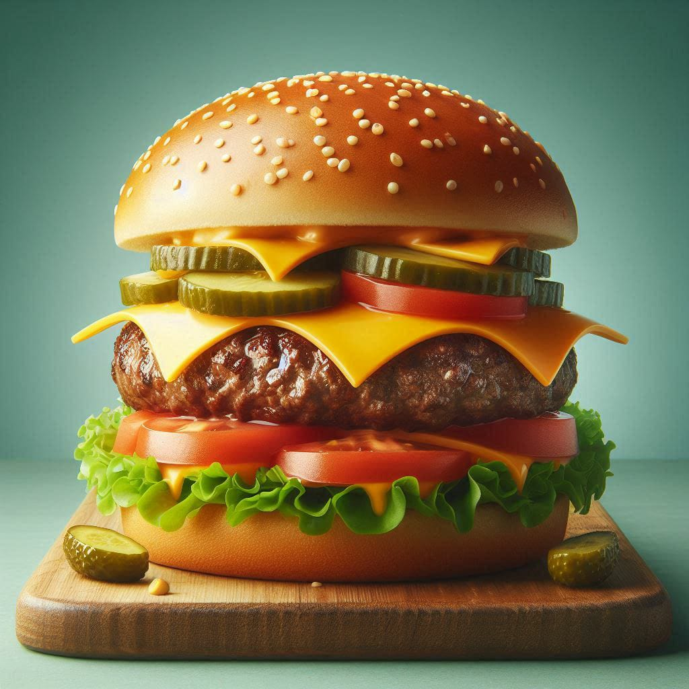

Cheeseburger

Description
Cheeseburgers are a classic and beloved meal enjoyed by many.
This simple yet delicious recipe will help you create juicy and flavorful cheeseburgers at home.
Customize with your favorite toppings and condiments for a perfect burger experience.
Ingredients
- 1 pound (450g) ground beef (80% lean)
- Salt and pepper, to taste
- 4 slices of cheddar cheese
- 4 hamburger buns
- Optional toppings: lettuce, tomato, onion, pickles, ketchup, mustard, mayonnaise
Steps
- Divide the ground beef into 4 equal portions and shape them into patties.
- Season both sides of each patty with salt and pepper.
- Heat a grill or skillet over medium-high heat.
- Cook the patties for about 4-5 minutes on each side, or until they reach your desired level of doneness.
- During the last minute of cooking, place a slice of cheddar cheese on each patty and cover the grill or skillet to melt the cheese.
- Toast the hamburger buns on the grill or in a toaster.
- Place the cooked patties on the bottom halves of the buns.
- Add your desired toppings and condiments.
- Top with the other half of the bun and serve immediately.
Enjoy your delicious Cheeseburger!!